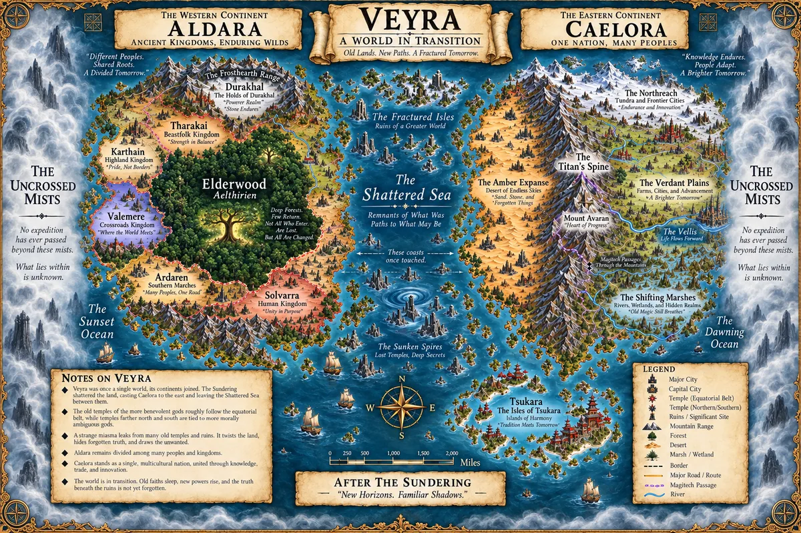
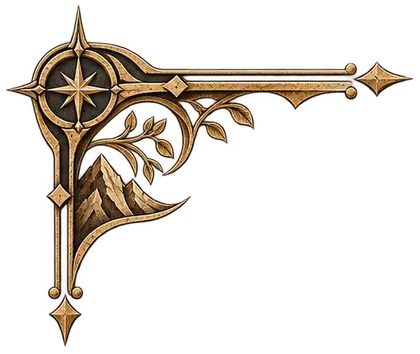
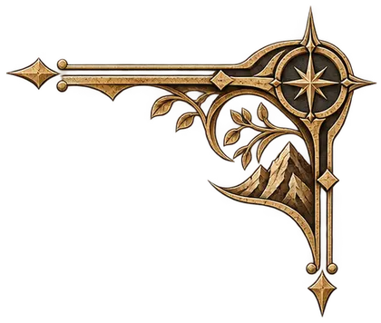
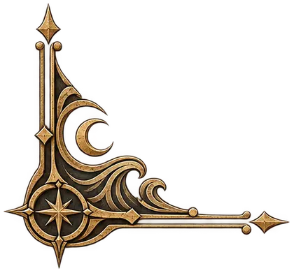
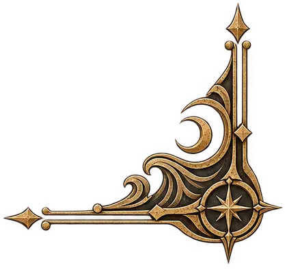

A Fantasy Roleplaying World
VEYRA
The world remembers more than we do.
A world shaped by the Sundering, ancient gods, inherited Gifts, dangerous frontiers, forgotten histories, and choices without easy answers.

1004 SR · A World in Transition
A world still living with the consequences of its past
Roughly a thousand years ago, the Sundering broke the lands between Aldara and Caelora, formed the Shattered Sea, destroyed ancient civilizations, and marked the disappearance of the Old Gods from ordinary mortal life.
Veyra did not stop changing. Caelora crosses vast distances by Arcrail and builds public infrastructure around saltstone. Tsukara follows a different path of precision mechanics, navigation, medicine, and shipbuilding. Aldara remains a continent of old kingdoms, mountain holds, clan traditions, trade roads, faiths, and the unmappable Elderwood.
The Known World
Three great regions divided by broken seas and the unknown
Explore Aldara in the west, Caelora in the east, Tsukara across the southern waters, and the Shattered Isles between them. Beyond the known routes lie the Uncrossed Mists.
Open the Known World Guide




Lands of Veyra
Old kingdoms, engineered nations, and guarded islands
Veyra has no single technological age, political order, or cultural center. Its lands developed along different paths and continue to shape one another.
Aldara
Kingdoms, holds, trade roads, rival faiths, old forests, and a continent where distance still matters.
The Connected AgeCaelora
A vast multicultural nation shaped by stewardship, Arcrail, saltstone infrastructure, medicine, and industry.
The Southern IslesTsukara
A guarded maritime civilization known for precision craft, navigation, medicine, shipbuilding, and spiritual tradition.
Broken WatersThe Shattered Isles
Dangerous waters, isolated settlements, old ruins, trade routes, mysteries, and the scars of the Sundering.

People, Homeland, Choice
Explore the peoples of Veyra →Your people gives you a heritage.
Your homeland gives you a culture.
Your choices determine who you become.
Start Here